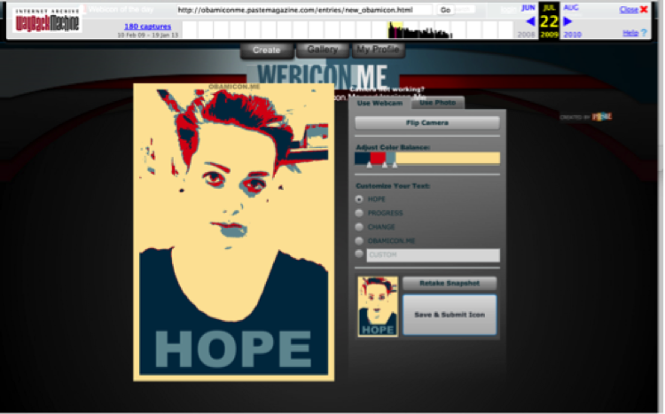
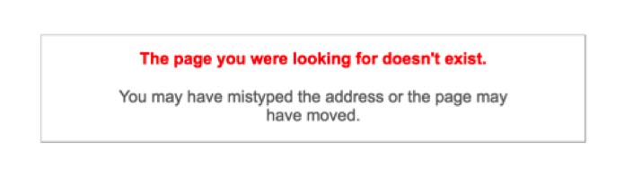
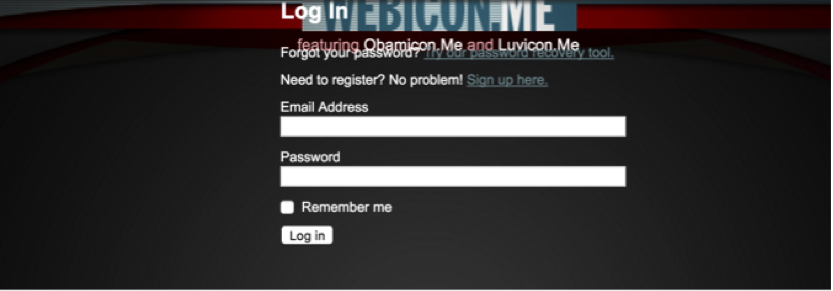
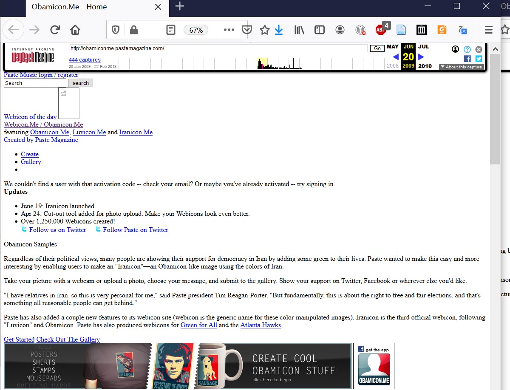

Digging Up Infrastructure with the Wayback Machine
While infrastructural inversion helps us account for the mechanisms and factors that explain how sites such as Obamicon.me come into development and fade into obscurity, the issue still remains as to how we might explore the images and networks lost when such link rot occurs. The Wayback Machine was developed to address such infrastructural issues and, as such, offers a valuable resource for the study of digital visual culture. The Wayback Machine began saving copies of web pages in 1996 and the growth of its archive is now propelled by automated web crawlers, a curated selection service used by librarians and subject experts called Archive IT, and individual users saving pages directly (Lepore). As Brewster Kahle, founder of Internet Archive and the Wayback Machine explained, the goal is to make cultural materials safe and perpetually accessible because “the history of libraries is one of loss” (Robertson). Given the Internet Archive’s non-profit status and stated mission to provide universal access to all knowledge, the Wayback Machine operates under very different imperatives than the commercial web.
As a project of the Internet Archive, an organization devoted to the free and open spread of knowledge, the Wayback Machine represents a novel institution of the web that provides both a way of studying images that have been otherwise removed from the web but also a force that significantly affects the lifecycle of images online, in part by using images (the cached webpages) as a method of preserving web content. The Wayback Machine is the result of efforts led by Internet Archive director Brewster Kahle to make the resources of the Internet Archive more publicly accessible, although how accessible the archive actually is remains a point of contention. As Lepore explains, “You can’t search it the way you can search the Web, because it’s too big and what’s in there isn’t sorted, or indexed, or catalogued in any of the many ways in which a paper archive is organized; it’s not ordered in any way at all, except by URL and by date.” To date, there have been few applications of the archive in academic research.13 Although Kahle proposed the Wayback Machine as “a browsing interface, a wow-isn’t-this-cool interface,” even he notes that it’s only “a first step” (Kahle, qtd. in Koman). Despite these concerns over the limitations of access, the Wayback Machine does allow users to access snapshots of select webpages that extend back to the mid-1990s. Users can search by URL and access a calendar and time distribution graph of each of the various times that the web page has been saved. By selecting a particular time, the user pulls up the images of the webpage captured at the particular date and time. The following video demonstrates the basic affordances and limitations of the Wayback Machine using the case of the Obamicon.me site.
The removal of Obamicon.me is just one small instance of the loss that is endemic to the web, but also one that did not go unnoticed. On a discussion on the Obamicon.me Facebook Page after the takedown of the website, one person offered a workaround to create Obamicons, directing others to the saved version of the site on the Wayback Machine but noting that you would need to take a screenshot of the image because the save feature no longer worked (see Fig. 5 for an example). The archive contains cached versions of the website captured at different points in time and preserves many aspects of the original site, including an extensive collection of Obamicons, ratings, and comments. However, because the archive preserves cached versions of the website, any functionality that requires contact with the original server no longer works. Social functionalities such as saving, sharing, and commenting are no longer available, with an array of error messages (see Fig. 6 for an example) and glitches in the archive signaling their absence.
Figures 5. The Obamicon generator as preserved on the Wayback Machine, still capable of generating images but no options to upload or download the images.

Figures 6. The 404 error message that appears when you attempt to visit the Obamicon.Me web address.
Presence and absence alike in the Wayback Machine’s archive of Obamicon.me helps contribute to a more complex understanding of the site itself, the ways in which digital visual phenomena are simultaneously and irreducibly technical, and a sense of what the Wayback Machine can help recover for visual rhetoric. The discursive accounts of Obamicon.me, referenced in the introduction, give a general sense of what the site was but tend to focus on exemplar Obamicons rather than infrastructure. The Wayback Machine, on the other hand, includes many images of the site captured over time—over 403 times between January 20, 2009 and February 22, 2013 for the main page—and these images contain additional information that helps one understand the infrastructure of the site, including changes in orientation and functionality, advertisements, and general site design. Additionally, the errors in the archive, what is missing and what does not load, also get at aspects of the site’s infrastructure. As cached web pages, many of the advertisements are not longer visible and the ones that do are visible are no longer monetized. The individual pages and images are not networked in the same way, with the any link or content that depended on accessing Paste’s servers rendered inoperable. While evidence of the sites concern with engagement remains (see Fig. 7 for the site registration page, encouraging users to log in or sign up despite the fact that neither feature is functional anymore), the different governing logic and technical capacities of the Internet Archive have altered their functionality.
Figure 7. A screenshot of the registration page for Obamicon.Me from the Wayback Machine. The formatting of the page has been corrupted and there is skewed and overlapping text.
Examining the appearance of the website over time shows that the Obamicon.me site was dynamic, changing in its design and mode of address, and expansive in its account of what an Obamicon entails. The first chronological capture includes more explanatory, introductory information, explaining the timeliness of the launch (“The longest election season in memory is now over, and we wanted to help you unwind and express yourself as we head into the new era”), an explanation of what the site offers, and instructions for getting started (Fig. 8). Additionally, the slogan at the top of the page characterizes it as “a bit of presidential fun created by Paste Magazine.” For the next few months, the site includes updates at the top of the page that include a variety of generated Obamicons, the launch of a Twitter profile, Facebook app, and related features. For example, on February 6th 2009, Luvicon launched to allow visitors to create Valentines-themed red and white images (Fig. 9). Merchandise became available in April of 2009 and new features appeared on the front page, including Obamicon of the day. Also, in April, the creation tool added a cutout feature to remove background material from user images in order to create an image that more closely approximated Shepard Fairey’s style. In June, a third photo generator became available: the Iranicon, a green and white take on the Obama-hope style image designed to allow users to demonstrate their solidarity for free elections in Iran (Fig. 10). As Paste president Tim Regan-Porter explains on the homepage: “These symbolic gestures may not have a huge impact, but millions around the world want to show their solidarity with those fighting for such fundamental rights and I think it's important to offer whatever encouragement we can."14 Gone is the focus on presidential fun and instead a more generalized or generic take on “webicons,” explained as a generic name for color manipulated images.
![A screenshot of the Obamicon.Me homepage from 20 January 2009, featuring a description of Obamcons reading the longest election season in memory is now over, and wanted to help you unwind and express yourself as we head into the new era. Make your own Obamicon -- your image in a style inspired by Shephard Fairey's iconic poster. Regardless of your candidate of choice in the 2008 election, here's your chance to sound-off. Take your picture with a webcam or upload a photo, choose your own message, and submit it to the gallery.](images/figure8.jpg)
Figure 8. A screencapture of the Obamicon.Me homepage from 20 January 2009, featuring a description of Obamicons.

Figure 9. A screencapture of the Obamicon.Me homepage from 16 February 2009, featuring a list of updates, including the launch of a Facebook page and a Luvicon image generator for Valentines day.
Figure 10. A screencapture of the Obamicon.Me homepage from 20 June 2009, featuring a list of updates including the launch of the Iranicon image generator the previous day, along with an announcement of over 1,250,000 webicons made.
In addition to the homepage captures displaying such features and information, the Wayback Machine has eighty-six captures of the Gallery page, with user-uploaded images, ratings, and interactive features. The Gallery archives are partial—some cached pages do not load the images, others lack the ratings or comment features. Saved images from the first page of the Gallery note that it contains thousands of pages of webicons, but after clicking through the first few pages, error messages like “The page you were looking for is not available” become increasingly common (Fig. 6). Still, the Gallery contains a far greater number of Obamicon images than available from news articles or blog posts about the site. In the pages on the Wayback Machine, many Obamicons are more mundane takes on the image style, featuring anonymous figures, captions that do not seem to make any sense, low quality photographs, etc. While there were certainly many humorous remixes of popular culture and pointed political messages created with Obamicon generators, the viral phenomenon was also constituted by a much larger number of mundane, confusing, boring, and/or personal images. Most of these images, with few views and even fewer comments, do not feature in accounts of the Obamicon phenomenon but represent the unique views and metrics of engagement that, in turn, helped make the platform economically viable and facilitate the creation of all Obamicons, clever, insightful, humorous, meaningful—or not.
Despite the errors and limitations of the archive, the record preserved on the Wayback Machine is not completely static. Some of the hyperlinks on Obamicon.me pages do still work and the filter mechanism has been preserved. Although it is not possible to upload an image to the site, the webcam feature is still functional and you can modify the balance between the colors of the site to create a better balance or achieve other desired aesthetic ends. During this process, one can almost pretend that the site is still active. However, this illusion is quickly shattered if one goes to save the image, as that function is not available. Instead, the uploading webicon screen runs indefinitely, confronting the expectations for sociality, interactivity, and instantaneousness that are typical to contemporary social image sharing sites. All of the built-in features to share on the site suggest that it is not about the process of image creation in and of itself, but the ability to create a sharable image. At the same time, there is an expectation that the process of creating a sharable image should be seamless: even the uploading page gives a bar to show progress, indicating one way that the site was designed to manage the expectations of visitors and give meaning to any delay. Technically created and modified images constitute the raw material for establishing connections between people, and provide content for social networks.
From the archived pages of Obamicon.me on the Wayback Machine, one can recover a broader range of content than discursive accounts of the phenomenon would suggest. This includes many instances of blurry photos and poor composition, of personal messages and insider references, rather than the more general address of politics or popular culture. While the overall Obamicon phenomenon was certainly viral and large-scale, its success depended in part upon the creation of many individual Obamicons that generated little to no attention. This finding cautions against an understanding of virality that takes any set of formal or technical features as guarantees of success. Instead, numerous mundane, ignored, overlooked images, ones with few ratings and no comments, perform failures of the spreadability so championed by Henry Jenkins (Jenkins et al.). Any viral trend leaves a much more numerous group of ignored content in its wake, and the Wayback Machine provides a better glimpse of the mundane, even boring, aspects of the social production of visual culture.
The Wayback Machine makes clear that sharing is not just something that automatically happens on the web; instead, it is engineered at the technical level of site design. As the video at the start of this section illustrates, you can recover a sense of the different kinds of technical features that contribute to a viral visual phenomenon using the readily available archive. Ratings, comments, and export features establish the technical functionality for sharing, while the image ranking setup of the gallery display provides incentives for user engagement. Despite the dominance of the visual in contemporary culture, visuality cannot be made sense of in isolation. Instead, the visual is modified and transformed within historical and material contexts. The analysis of the Obamicon.me as an example of the visual web suggests that the phrase itself is shorthand for particular understandings of sociality, interactivity, and instantaneousness. These are not natural occurrences; instead, these are accomplishments structured by protocols of the web, the design of platforms, and the underlying imperatives that support such institutions. One of the key insights taken from looking at infrastructure is that possible relations are complex, certainly, but they are not infinite or random. Instead, relations are multiply determined and partially structured. This is particularly evident in digital environments, where hyperlinks, flows, feeds, tags, and code all contribute to structure the circulation of digital content.
13. See Helmond et al. for an interesting exception. Here, the researchers trace a history of Facebook’s commercial partnerships using cached images of Facebook’s news and advertising pages, along with industry blogs.↩
This trend of commemorating notable political events and natural disasters continues today with the availability and popularity of Facebook profile picture filters.↩